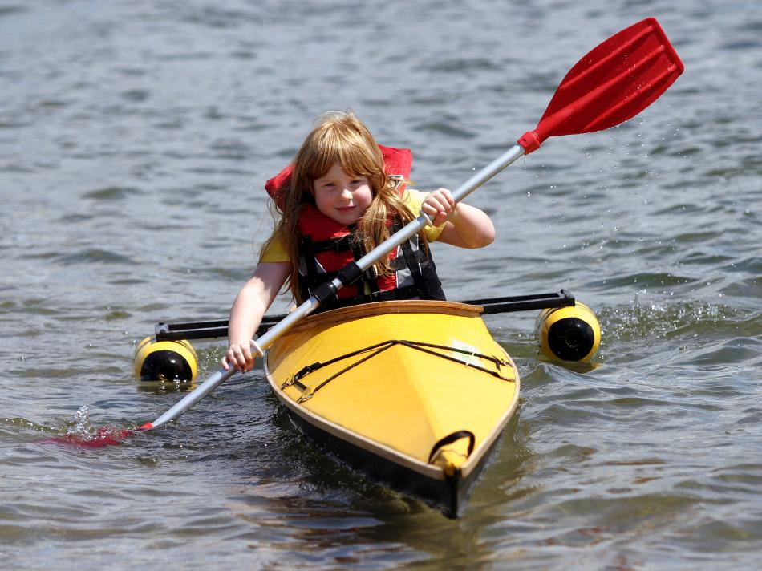

| (New) Sea Flea by Bill Soderberg (US) | Menu Previous Page Next Page |
|

A 6 year old paddles the Sea Flea recently completed by Bill Soderberg of Los Angeles, California. Bill added sponsons to increase stability for this first attempt. The look on her face says this won't be her last. Bill also constructed a Sea Ranger. Use the {Back} key to return.
|
|